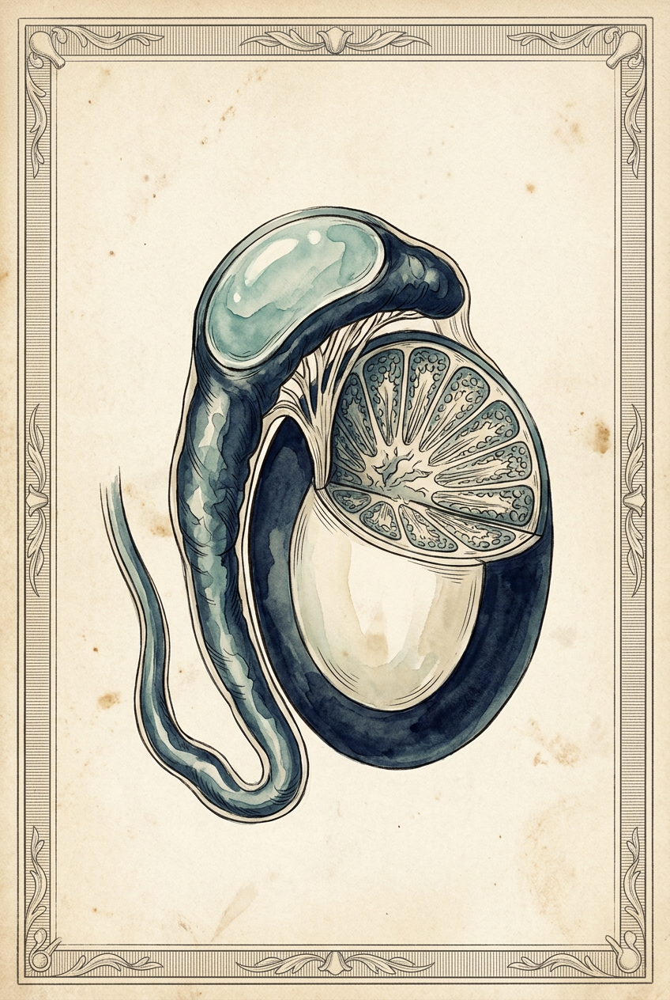
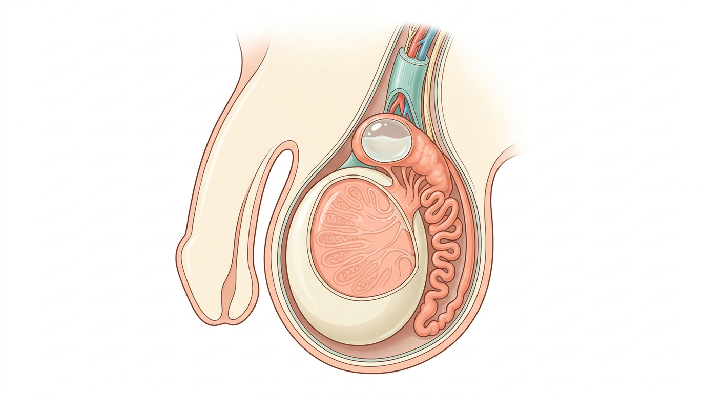
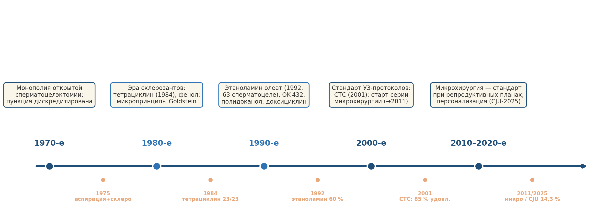
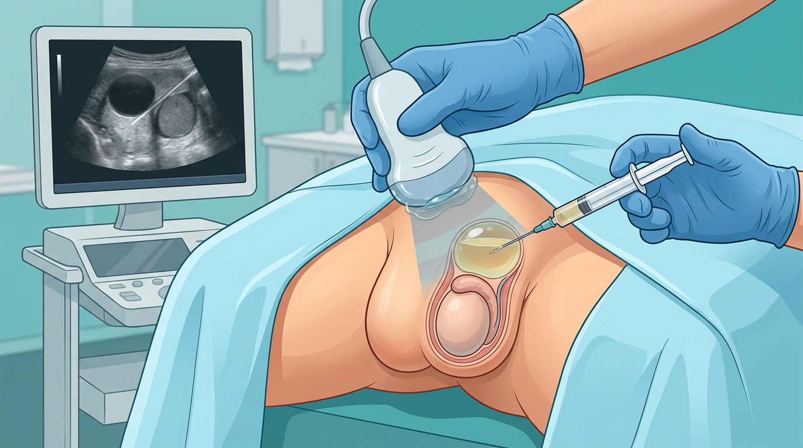
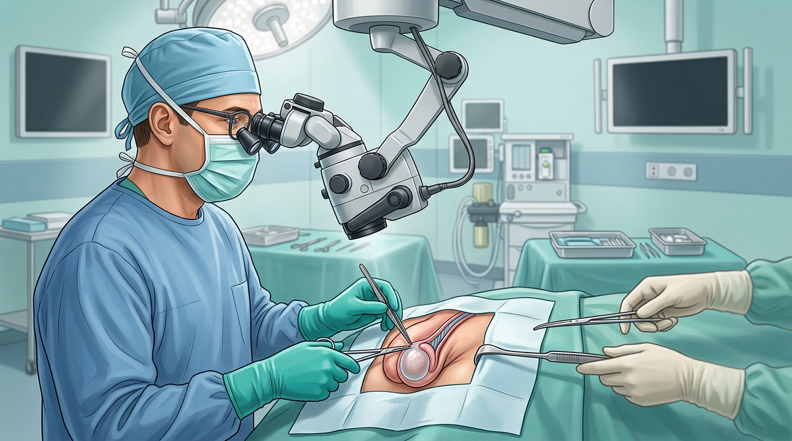
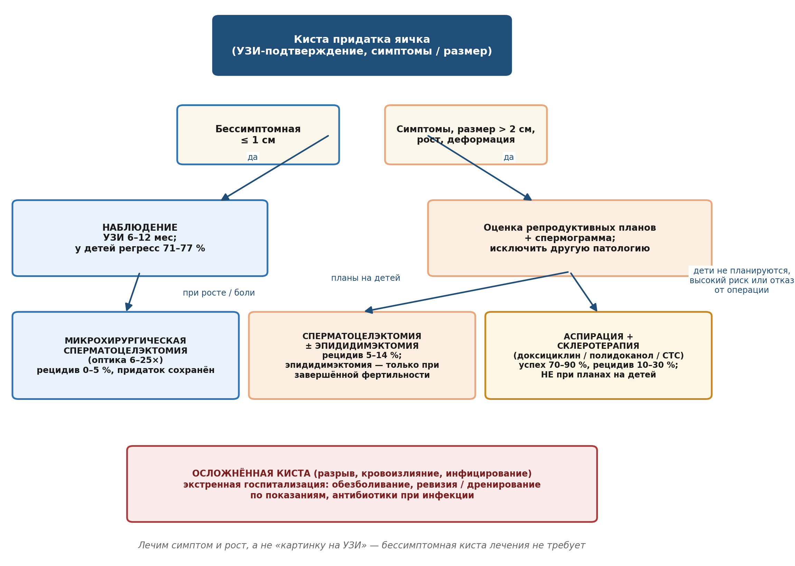
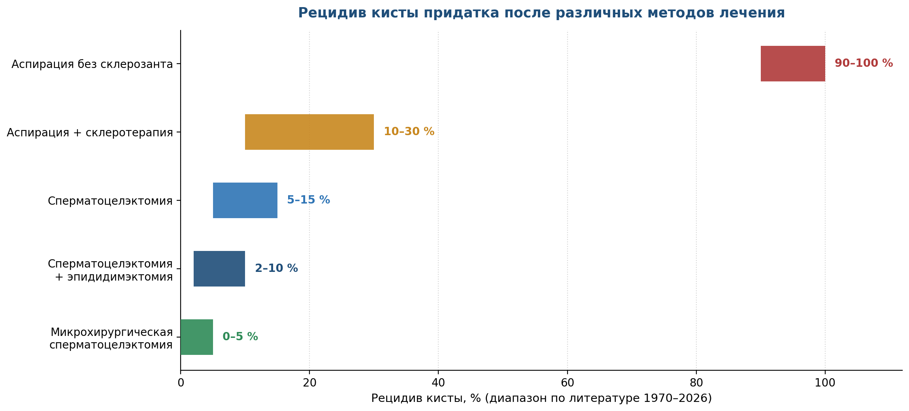

Киста придатка яичка — одна из самых частых находок на ультразвуковом исследовании мошонки и одновременно одна из самых «тихих» тем урологической литературы. Несмотря на то что с ней сталкивается каждый пятый-третий мужчина, за минувшие полвека не опубликовано ни одного рандомизированного исследования непосредственно по её лечению, а данные о частоте рецидивов после «золотого стандарта» — сперматоцелэктомии — не выходили из печати в течение восемнадцати лет.
Эта книга родилась из клинического протокола и нарративного обзора литературы, подготовленных в 2026 году. Задача издания — собрать в одном месте всё, что накоплено с 1970 года: пять лечебных эпох, восемь классов методов, результаты ключевых серий и рандомизированных исследований смежной патологии, а также здравый смысл, который помогает выбрать метод конкретному человеку — с его симптомами, возрастом и репродуктивными планами.
Книга адресована и врачу, и вдумчивому читателю без медицинского образования: главы построены так, чтобы их можно было читать последовательно или открывать любую отдельно. Таблицы и схемы дают сжатую выжимку, текст — логику и историю, иллюстрации — образ метода.
Кисту придатка лечат не потому, что она «плохая», — она доброкачественная и чаще всего безобидная. Лечат симптом: боль, рост, дискомфорт, сдавление придатка. Бессимптомная киста лечения не требует — требуется наблюдение.
Придаток яичка — это туго свёрнутый шнур из тончайших канальцев, прилегающий к задне-верхнему краю яичка. В нём сперматозоиды созревают, накапливаются и дожидаются своего часа. Головка придатка принимает сперму из яичка через 12–15 выносящих канальцев, тело и хвост продолжаются семявыносящим протоком. Столь хрупкая и насыщенная архитектура уязвима: стоит одному канальцу закупориться — и начинается история болезни, о которой эта книга.

Механизм образования кисты называется ретенционным. Обструкция выносящего канальца — врождённая, воспалительная, травматическая или ятрогенная — приводит к застою секрета и сперматозоидов. Каналец расширяется, его стенка истончается и сглаживается, формируется округлая полость с фиброзной капсулой. Если внутри находятся сперматозоиды и лецитиновые зёрна, образование называют сперматоцеле; если содержимое серозное — просто кистой придатка. Для выбора лечения эта разница не принципиальна: тактика едина.
| Группа факторов | Конкретные факторы и их вес |
|---|---|
| Обструктивные (приобретённые) | Вазэктомия и операции по поводу паховой грыжи — частота сперматоцеле достоверно возрастает; вмешательства в зоне семявыносящих путей |
| Воспалительные | Перенесённый орхоэпидидимит (хламидии, гонококк, неспецифическая флора), туберкулёзный эпидидимит, паротит с орхитом |
| Травматические | Тупая травма мошонки; хроническая микротравматизация (велоспорт, вибрация) |
| Врождённые | Аномалии эфферентных канальцев, эмбриональные остатки (гидатида придатка); ассоциации с мутациями CFTR и поликистозом почек |
| Внутриутробные | Пренатальное воздействие диэтилстильбэстрола (DES) и эстрогеноподобных веществ |
| Возраст | Пик выявляемости 30–60 лет; вторая волна — дети и подростки |
| Идиопатические | Причину установить не удаётся — большинство случаев |
Киста придатка не переходит в рак, не повышает риск рака яичка, не передаётся половым путём и сама по себе обычно не вызывает бесплодия. Быстрый рост образования нетипичен и требует пересмотра диагноза — но это касается осложнений и ошибок диагностики, а не типичного течения.
Большинство кист находят случайно — сам пациент замечает безболезненную «горошину» над яичком, или образование выявляют при УЗИ по другому поводу. Классическая картина при осмотре: округлое, эластичное, гладкое образование в области головки придатка, чётко отдельное от яичка, свободно смещающееся под пальцами. Крупные кисты просвечивают при диафаноскопии — сквозь них проходит мягкий молочный свет, как сквозь матовое стекло.
■ Плотное образование в самой ткани яичка, асимметрия плотности яичек — исключить опухоль яичка.
■ Быстрый рост «кисты» за недели — думать об опухоли, грыже, гидроцеле.
■ Острая боль с покраснением и лихорадкой — перекрут, орхоэпидидимит, абсцесс: экстренная ситуация.
■ У детей и подростков — не забыть о перекруте гидатиды (придаточного образования).
Отдельный этикет диагностики: киста не «лечится пробой антибиотика». Антибиотики показаны только при сопутствующем эпидидимите; киста — неинфекционное образование, и никакой курс препаратов её не уменьшит. Это подводит нас к главному вопросу книги — чем же её всё-таки лечат.
История лечения кисты придатка — это в миниатюре история всей хирургии второй половины XX века: от широкого скальпеля — к оптике, от разреза — к игле, от «лечим всё, что видим» — к персональному решению. Пройдём по пяти эпохам.

Единственным методом оставалась открытая сперматоцелэктомия через разрез мошонки. Простая пункция кисты к этому времени уже была дискредитирована: жидкость накапливается вновь практически у всех пациентов — по современным сводным данным, рецидив после изолированной аспирации приближается к ста процентам. В 1975 году появилось первое сообщение об аспирации со склеротерапией — правда, пока при гидроцеле.
Публикация 1984 года о тетрациклиновой склеротерапии (излечены 23 из 24 пациентов, единственный побочный эффект — боль) открыла век химического «склеивания» полостей. Методику перенесли на сперматоцеле, сразу с важной оговоркой: склерозант вызывает фиброз придатка и опасен для фертильности. Параллельно M. Goldstein закладывал принципы микрохирургии мужского бесплодия — фундамент будущего стандарта.
Испробован весь арсенал: этаноламин олеат (крупнейшая серия — 63 сперматоцеле: полный эффект 60 %, частичный 33 %, неудача 7 %), доксициклин, сменивший тетрациклин в США, фенол, полидоканол, японский OK-432 (излечение 18 из 20 после одного сеанса). Итог десятилетия честен: методы работают неплохо, но ни один агент не обеспечил надёжного контроля рецидива, а риск для придатка остался.
Проспективный протокол Beiko и Morales (2001) с тетрадецилсульфатом натрия оформил пункционный подход: удовлетворённость 85 %, осложнений нет, десять минут и 104 канадских доллара за процедуру. Одновременно стартовала пятнадцатилетняя серия микрохирургической сперматоцелэктомии, завершившаяся публикацией 2011 года.
Работа Kauffman, Kim, Tanrikut и Goldstein (J Urol, 2011) задала эталон: ни ткани придатка в препаратах, ни снижения сперматозоидов, ни рецидива и атрофии при наблюдении. Китайская серия подтвердила купирование боли в 80 % случаев при 39 минутах операции. Свежайшая серия 2025 года добавила важный штрих: добавление эпидидимэктомии достоверно снижает рецидив — но лишь тем, кто больше не планирует детей.
| Год | Исследование | Главный результат |
|---|---|---|
| 1984 | Тетрациклин, J Urol | 23/23 излечены; старт эры склерозантов |
| 1992 | Этаноламин олеат, 158 пациентов, J Urol | Сперматоцеле: 60 % полный эффект; УЗИ без изменений яичек |
| 2001 | СТС, Beiko & Morales, J Urol | Удовлетворённость 85 %; процедура 10 минут, осложнений нет |
| 2011 | Микрохирургия, Kauffman et al., J Urol | Рецидивов, атрофии и ухудшения спермограммы нет |
| 2021 | Аспирация + склеротерапия, Urology | К операции перешли 11 % со сперматоцеле за ~2 года |
| 2025 | 70 операций, Can J Urol | Рецидив 14,3 %; ниже с эпидидимэктомией (p=0,006) |
За полвека к кисте придатка примерили едва ли не все подходы амбулаторной и операционной урологии. Выжили в практике немногие — и у каждого осталась своя, точно очерченная ниша. Полный каталог представлен в таблице ниже, а затем — подробно о двух «китах»: пункционных методах и хирургии.
| Метод | Эффективность / рецидив | Влияние на фертильность | Место в 2026 г. |
|---|---|---|---|
| Наблюдение | Регресс малых кист 71–77 % у молодых | Нет | Выбор при бессимптомных кистах до 1 см |
| Аспирация без склерозанта | Рецидив ~100 % | Нет | Отклонена; разово — как паллиатив |
| Аспирация + склеротерапия | Успех 70–90 %; рецидив 10–30 % | Риск обструктивного бесплодия | Альтернатива при отказе от операции |
| Сперматоцелэктомия | Рецидив 5–15 % | Небольшой риск повреждения придатка | Стандарт симптомных кист |
| Сперматоцелэктомия + эпидидимэктомия | Рецидив достоверно ниже | Бесплодие вероятно | Только при завершённой фертильности |
| Микрохирургическая сперматоцелэктомия | Рецидив 0–5 % | Придаток сохранён | Метод выбора при планах на детей |
| Радиоволновые/лазерные методики | Полноценных серий нет | Не изучено | По доступности оборудования |
| Гормоны, ферменты, физиотерапия | Эффективность не показана | Нет | Не применяются |

Чистая аспирация сегодня — почти исторический анекдот: киста наполняется вновь у практически всех пациентов. Всё решает склерозант — вещество, намеренно вызывающее асептическое воспаление и слипание стенок полости. Современная процедура занимает 10–20 минут под местной анестезией и ультразвуковым контролем.
| Склерозант | Режим | Результаты по литературе |
|---|---|---|
| Доксициклин | 100–200 мг в 10–20 мл; экспозиция 15–30 мин | Наиболее употребим в амбулаторной практике; излечение до 84 % в сериях |
| Полидоканол 3 % | Раствор или пена, 30–50 % объёма кисты | Эффективность ~82,6 %, у 62 % — после первого сеанса; почти безболезненный |
| Тетрадецилсульфат натрия 3 % | Раствор после полной аспирации | Излечение 29 % + успех 36 %; удовлетворённость 85 % |
| Этаноламин олеат 5 % | Под УЗ-контролем | Полный эффект 60 %, частичный 33 %, неудача 7 % |
| Этанол 95 %, тетрациклин, фенол, OK-432 | Исторические и региональные варианты | От 18/20 излечений (OK-432) до высокого процента рецидивов |
Метод допустим только у пациентов, которые больше не планируют детей: фиброз может перекрыть тонкие канальцы придатка и вызвать обструктивное бесплодие. Информированное согласие — не формальность, а суть процедуры. Гистологии при пункционных методах нет — при любом сомнении в диагнозе путь лежит к хирургу.
Операция при кисте придатка — короткое, отточенное вмешательство: тридцать-шестьдесят минут, чаще всего местная или спинальная анестезия, дневной стационар. Но именно здесь литература последних двадцати лет сделала самый тонкий ход: оказалось, что разница между «удалить кисту» и «удалить кисту, сохранив придаток» — это разница между операцией вообще и операцией для мужчины, который ещё хочет детей.

| Осложнение | Частота (сперматоцелэктомия) | Комментарий |
|---|---|---|
| Гематома мошонки | 2–8 % | Профилактика — гемостаз и суспензорий |
| Инфекция раны / эпидидимит | 1–3 % | Антибиотикопрофилактика цефазолином |
| Рецидив кисты | 5–15 % | Ниже с эпидидимэктомией; выше — при разрыве капсулы |
| Повреждение придатка / протока | до ~5 % (двусторонние операции) | Главный аргумент для микрохирургии |
| Хроническая мошоночная боль | 1–5 % | Редко; обсуждается при повторных операциях |
Синтез пятидесяти пяти лет умещается в одну схему. Ключевые переменные: размер и симптомы кисты, репродуктивные планы пациента, операционно-анестезиологический риск и оснащённость клиники. Пройдём по стрелкам.

Группа I — бессимптомные кисты до 1 см. Наблюдение: УЗИ через 6–12 месяцев. У детей и подростков вероятность самостоятельного регресса достигает 71–77 %, поэтому торопиться тем более некуда.
Группа II — кисты 1–2 см с лёгким дискомфортом. Поддерживающее бельё, курсы НПВС 5–7 дней, контроль УЗИ. При прогрессировании — переход в третью группу.
Группа III — кисты более 2 см, боль, рост, деформация мошонки. Территория активного лечения. Планирует детей — микрохирургическая сперматоцелэктомия; фертильность завершена — сперматоцелэктомия, при рецидиве или многокамерной кисте — с частичной эпидидимэктомией; операция невозможна или отвергнута — склеротерапия с полным информированием.
Группа IV — осложнения. Разрыв, кровоизлияние, инфицирование — экстренная госпитализация, обезболивание, при необходимости ревизия и дренирование.
Лечим симптом и рост, а не «картинку на УЗИ». Медикаментов, «рассасывающих» кисту, не существует — это подтверждено авторитетными клиническими ресурсами: «There is no drug to cure or prevent spermatoceles».
Два вопроса, которые задают в кабинете чаще всего: «а вдруг снова вырастет?» и «а смогу ли я ещё иметь детей?». Ответы — в цифрах.

Иерархия рецидива предсказуема: чем радикальнее удалён источник кисты, тем реже она возвращается. Чистая аспирация почти гарантированно рецидивирует; склерозант снижает рецидив до 10–30 % ценой риска для придатка; классическая сперматоцелэктомия даёт 5–15 % (свежая серия 2025 года — 14,3 % при коротком наблюдении); добавление эпидидимэктомии достоверно снижает частоту возврата (p = 0,006); микрохирургическая серия 2011 года не знает рецидивов вовсе — по крайней мере, на горизонте наблюдения.
Сама киста чаще фертильности не мешает, но крупное образование может механически сдавливать придаток. Ятрогенные риски концентрируются в двух точках: постилерозный фиброз после склеротерапии и повреждение придатка при операции, особенно двусторонней. Микрохирургия — единственный метод, для которого сохранность придатка подтверждена и гистологически, и по спермограммам.
Малигнизация кисты придатка не описана; риск рака яичка она не повышает. Настороженность нужна лишь тогда, когда «киста» ведёт себя нетипично — растёт скачком, плотная, спаяна с яичком.
Нет. Лонгидаза, энзимы, венотоники, физиотерапия, «народные средства» — ни один класс не показал эффекта при ретенционной кисте с фиброзной капсулой. Единственный нехирургический способ добиться спадения полости — пункция со склерозантом.
Односторонняя операция в подавляющем большинстве случаев фертильность не меняет; микрохирургическая техника создана именно для её защиты. Разумные предосторожности — спермограмма до вмешательства и выбор хирурга, оперирующего с оптикой.
Обычно — несколько часов. Большинство вмешательств выполняются в дневном стационаре с выпиской в тот же день или на следующее утро.
За руль и «офис» — через 3–7 дней; физический труд и спорт — через 2–4 недели; половую жизнь — через 2–3 недели или после контрольного осмотра.
Чаще всего — ничего: киста стабильна. Сценарии ухудшения — медленный рост и нарастающий дискомфорт, что переводит пациента из «наблюдения» в «лечение». Регулярный УЗИ-контроль раз в 6–12 месяцев делает любой сценарий управляемым.
Пятьдесят пять лет лечения кисты придатка яичка — это путь от безальтернативного скальпеля через увлечение склерозантами к трезвой персонализации. Сегодня выбор определяется тремя вопросами: беспокоит ли киста, планирует ли мужчина детей и готов ли он к операции. Микрохирургическая сперматоцелэктомия — лучший ответ при репродуктивных планах; сперматоцелэктомия с эпидидимэктомией — самый радикальный при завершённой фертильности; пункционные методы — честный компромисс с оговорками; наблюдение — мудрая тактика для большинства малых кист.
Будущее проблемы предсказуемо: нужен проспективный регистр вмешательств на придатке, стандартизованные критерии рецидива и — впервые за историю вопроса — рандомизированное сравнение сперматоцелэктомии с эпидидимэктомией у пациентов, не заинтересованных в фертильности. Пока такие исследования не проведены, лучшим «регулятором» остаётся информированный диалог врача и пациента — надеемся, эта книга сделает его проще.
1. Beiko D. T., Morales A. Percutaneous aspiration and sclerotherapy for treatment of spermatoceles // The Journal of Urology. 2001. Vol. 166, No. 1. P. 137–139.
2. Kauffman E. C., Kim H. H., Tanrikut C., Goldstein M. Microsurgical spermatocelectomy: technique and outcomes of a novel surgical approach // The Journal of Urology. 2011. Vol. 185, No. 1. P. 238–242.
3. Spermatocelectomy with and without epididymectomy: retrospective experience at a single institution in patients not interested in fertility preservation // Canadian Journal of Urology. 2025. Vol. 32, No. 5.
4. Ethanolamine oleate sclerotherapy for hydroceles and spermatoceles: a survey of 158 patients with ultrasound follow-up // The Journal of Urology. 1992.
5. Sclerotherapy with tetracycline solution for hydrocele // The Journal of Urology. 1984.
6. Aspiration and sclerotherapy: a minimally invasive treatment for hydroceles and spermatoceles // Urology. 2021.
7. Spermatocelectomy and partial epididymectomy for a large multilocular spermatocele and epididymal head cyst // Journal of Medical Insight. 2026.
8. Comparison of aspiration-sclerotherapy with hydrocelectomy in the management of hydrocele: a prospective randomized study // International Journal of Surgery. 2009.
9. Aspiration and sclerotherapy for the management of hydrocele in an ambulatory and regional setting // SIUJ. 2024. Vol. 5, No. 6.
10. Presentation and management outcome of symptomatic epididymal cysts in children: a case series. 2023.
11. Bilateral epididymal cysts in an adolescent: case report and review // Clinical Case Reports. 2020. Vol. 8. P. 2689–2691.
12. Fertility-enhancing male reproductive surgery: glimpses into the past and thoughts for the future // Fertility and Sterility. 2019.
13. Jayakarthik Y. et al. Sclerotherapy in the management of hydrocele // JEMDS. 2015. DOI: 10.14260/jemds/2015/198.
14. Hydrocele aspiration and sclerotherapy with doxycycline: retrospective analysis // IJSR. 2015. Vol. 4, No. 11.
15. Современный взгляд на лечение кист придатка яичка как фактора обструктивной азооспермии // Урологические ведомости. 2019.
16. Саркисян Д. В., Виноградов И. В. Отдалённые результаты применения метода склеротерапии в лечении кист придатка яичка.
17. Campbell-Walsh-Wein Urology. 12th ed. Philadelphia: Elsevier, 2020.
18. EAU Guidelines on Sexual and Reproductive Health. European Association of Urology, актуальная версия.
19. Microsurgical hydrocelectomy with concomitant spermatocelectomy: single-institution series (58 men, 70 procedures; recurrence 0 % at 68.8 months).
20. Urology Care Foundation. Spermatoceles: Symptoms, Diagnosis & Treatment.
21. Ramsay Health Care (UK). Epididymal Cyst Removal: Alternative treatments — Medication. 2026.
22. MyHealth Alberta. Spermatocele (Epididymal Cyst).
23. ScienceDirect Topics: Spermatocele — Genitourinary Imaging.
24. Pur Clinic. Spermatocele: causes and risk factors.
25. Healthline. Spermatocele: Treatment, Symptoms and More.
Бессимптомная киста — не болезнь, а находка.
Симптом — повод для разговора, а не для страха.
Пятьдесят пять лет литературы научили главному:
лечить человека, а не картинку.